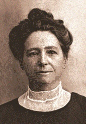
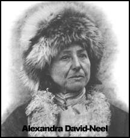

PHẦN THỨ NHÌ - NĂM NHÀ MẠO HIỂM DAVID NEEL
Dưới ánh nắng gay gắt miền Nam, vào khoảng hai giờ chiều, tôi đi dọc theo con sông Bléone mà dòng nước cuồn cuộn dội vào các mỏm đá nổi, để tìm một biệt thự mang cái tên hứa hẹn là Samten Dzong.
Samten-Dzong có nghĩa là “Tịnh thất”; nhiều tu viện Tây Tạng mang tên đó. Nhưng Samten Dzong tôi kiếm hôm nay ở Digne không phải là một tu viện mà là biệt thự của Alexandra David-Neel và của lạt ma(1) Yongden, cả hai đều là những nhà mạo hiểm và đã viết những tác phẩm rất hấp dẫn được báo chí trên thế giới nhắc nhở tới.
Tới nơi, tôi thấy ngôi nhà giống nhiều ngôi nhà khác, mái cũng lợp ngói, vườn cũng rậm những bách ly hương (thym) và oải hương thảo (lavande).
Ở Cổng rào, một người thấp bụng phệ, rõ ràng có vẻ như ngồi đợi ai; người đó bận một chiếc sơ- mi có sọc, hở cổ (thứ sơ mi bán ở các chợ phiên cho nông dân), một chiếc quần màu lam đậm, đáy rộng quá càng làm cho thân hình mập mạp thêm xấu. Đầu đội một cái mũ chụp kỳ cục. Lại gần, tôi nhận thấy chiếc mũ là thứ mũ thủy thủ, cáu bẩn; thật là ngạc nhiên.
Vừa tin chắc, vừa hoảng hốt, tôi nghĩ bụng rằng chính là vị lạt-ma Yongden đây. Nhìn nét mặt đó thì không còn ngờ gì được nữa. Trước tôi cứ mơ tưởng sẽ được thấy những bộ cà sa và những bộ áo dài Trung Hoa, bây giờ tôi dồn nén những ước vọng đó lại mà hỏi thăm nữ chủ nhân.
- Má tôi đợi bà... Mời bà đi lối này...
Trong khi theo lạt ma Yongden đi qua khu vườn để vô nhà, tôi tự hỏi một người như vậy mà sao có thể là một học giả quảng bác, tác giả tiểu thuyết lạ lùng đầy thi vị: Le Lama aux cinq sagesses (Vị lạt ma có năm đức minh triết).
Chúng tôi rảo bước đi ngang qua phòng ngoài mà cách trang hoàng thật kỳ cục; đồ đạc kiểu Louis Philippe mà lại treo bày các kỷ niệm về châu Á, khỏi phòng đó, tới một phòng rộng cửa sổ mở toang nhìn thấy các cây trái trong vườn. Phía cuối cùng, là chỗ làm việc, có bức vách đục cửa ngăn cách với phía ngoài.

Alexandra David-Nee
Tôi tới trước mặt Alexandra David-Neel.
Bà rất nhỏ con. Nét mặt thanh nhã, cặp mắt có vẻ mỉa mai. Mắt nhọn, cho ta cảm tưởng là bà vừa có uy quyền, vừa có tinh thần hài hước cần thiết cho cuộc sống, vẻ rất quyến rũ; tôi ngạc nhiên nhất là con người cá tính mạnh mẽ như đàn ông đó lại có một cái duyên rất là đàn bà, cái duyên mà thời gian, tuổi tác không làm mất được.
Tôi đoán rằng nhờ cái duyên đó mà bà đã vượt được biết bao trở ngại, vào được biết bao những cung điện thâm nghiêm, gây được biết bao mối tình thân thiết có lợi cho bà.
Alexandra David-Neel thời trẻ chắc cũng không đẹp gì, trái lại là khác. Nhân tiện đây tôi xin ghi rằng mặc dầu được lãnh nhiều huy chương hơn một vị đề đốc nữa, bà không đeo một chiếc nào cả, ngay cả Bắc đẩu bội tinh của Pháp cũng không.
Bà bảo:
- Không phải cái ý muốn viễn du phát sinh trong lòng tôi đâu. Nó là bẩm sinh, vốn có sẵn trong lòng tôi rồi. Những người tin thuyết luân hồi, thuyết đầu thai, có thể cho rằng một nhà thám hiểm nào thời trước đã thác, sinh vào thể xác nhỏ bé của tôi này. Còn những người tin thuyết di truyền thì sẽ cho rằng sở dĩ tôi ham mê du lịch là do tổ tiên bên ngoại tôi là giống người Viking(2); ở phương Bắc.

Alexandra David-Neel lúc trẻ
Đúng vậy, Alexandra David-Neel sanh ở Paris, cha gốc Anh, nhưng mẹ gốc Đan Mạch, nên có huyết thống Viking.
Tôi biết đọc hồi bốn tuổi, và tôi mê mẩn ngắm hàng giờ các bản đồ địa lý. Người ta bảo tôi rằng những bản đồ đó là “chân dung của trái đất”, tôi hiểu được lời nói bóng bẩy đó, và tôi muốn đi coi những dòng sông mà tôi đọc được tên, những con sông không phải là sông Seine (3), coi những thành phố không phải Paris. Muốn tới những chỗ đó, có phải đi lâu lắm không? Tôi tự hỏi tôi như vậy, nhưng tôi tin chắc rằng xa gì thì xa, thế nào tôi cũng sẽ tới được! Nhưng còn song thân tôi và chị vú, hạng người luôn luôn coi chừng các em gái, ngăn cấm chúng, không cho chúng muốn đi đâu tùy ý. Thật chán quá trời!
“Hồi năm tuổi, tôi trốn đi “thám hiểm” khu rừng Saint-Mandé: hỡi ôi! thám hiểm không được lâu: hai giờ sau tôi bị bắt đem trả về nhà.
“Hồi mười bảy tuổi tôi lại trốn nhà một lần nữa. Lúc đó song thân tôi nghỉ mát ở Ostende. Từ
Ostende tôi đi bộ sang Hòa Lan rồi xuống tàu biển qua Anh. Được lang thang mấy ngày, hoàn toàn tự do và cô liêu, tôi thấy sướng vô cùng; thích cô liêu cũng là một tánh bẩm sinh của tôi nữa. Khi hết tiền, tôi mới trở về nhà cha mẹ tôi”.
Bà kín đáo, nói rất ít về lần ở bên Anh đó; bà sống thiếu thốn, rất khắc khổ, ngày nào cũng phải nhịn ăn. Bà tìm được hội Thông thiên học và muốn vô hội lắm.
Trở về Pháp, bà ghi tên vô Trường Sinh ngữ phương Đông để học tiếng Tây Tạng, và vô đại học Sorbonnne để học tiếng Phạn. Vô thăm viện Bảo cổ Guimet bà thích mê đi. Bà là sinh viên được các nhà Đông phương học nổi tiếng thời đó, như giáo sư Foucaux và Eliphas Lévi mến nhất.
Rồi một buổi sáng nọ bà lặng lẽ lên đường, qua thăm Ấn Độ, Trung Hoa, Tây Tạng lần thứ nhất, ở cái xứ đó trong mấy năm liền.
Nhưng rồi bà lại muốn biết Bắc Phi. Qua đó, bà nhận lời cầu hôn của một viên kỹ sư hỏa xa còn trẻ ở Tunisie, thế là bà bị cột chân. Nhưng chồng bà và Tunisie không giữ bà được lâu. Bà xin được bộ Quốc gia Giáo dục Pháp phái qua Ấn Độ và bà nói với chồng rằng sẽ đi ít lâu rồi về. Sự thực, chuyến đó bà xa chồng mười bốn năm liền.

*
Ở Ấn Độ, bà được vị Đạt Lai Lạt Ma tiếp kiến; Trung Quốc xâm chiếm Tây Tạng, ông ta phải trốn qua Ấn Độ.
Bà say mê nghe vị Lạt Ma đó nói chuyện về đạo và bà thấy thích môn siêu hình học Tây Tạng
gấp bội khoa Thông thiên học Anh. Từ đó, bà quyết tâm vô cho được Lhassa, mặc dầu biết rằng sẽ phải mạo hiểm, sẽ gặp nhiều trở ngại không vượt nổi, nhiều gian nan nguy tới tánh
mạng nữa, và trước bà, nhiều nhà thám hiểm đã thất bại, mà những người đầu tiên là các linh mục Dòng tên Huc và Gabet năm 1846.
Sau nhiều gian truân, kịch biến y như trong tiểu thuyết, mà lại như có phép mầu, bà thành công, và gặp một thiếu niên, mới vừa qua tuổi thơ mà đã nhiệt liệt ước ao được viễn du, đi đây đi đó cho biết khắp thế giới. Gặp cậu, bà nhớ lại hoài bão của mình hồi còn là nữ sinh, nên bà cảm động, lưu ý tới cậu liền. Thiếu niên đó chính là Lạt ma Yongden.
Muốn được làm lạt ma thì phải hoặc có một tinh thần, một trí tuệ siêu quần, hoặc là hiện thân
của các vị lạt ma quá cố, theo tín ngưỡng Phật giáo Tây Tạng. Lạt ma Yongden có điều kiện sau đó; bà nhận cậu làm con nuôi, và từ đó, cậu không rời bà một bước, theo gót bà trong những cuộc thám hiểm táo bạo nhất, chẳng hạn trong cuộc hành trình bất tận và nguy hiểm về mọi mặt để tới Lhassa rồi ở lại đó, nơi mà lần đầu tiên một người đàn bà da trắng vô được.
Kế đó, bà tới những tu viện ở cheo leo trên núi cao 3.900 thước, đầy những bí mật về thần linh và ma thuật Tây Tạng; rồi đi hành hương ở Bénarès, Ấn Độ, Nhật Bản, Trung Hoa, sau lại trở về Tây Tạng ở một thời gian lâu...
Bà bảo:
“Địa thế Tây Tạng khác hẳn các nơi khác. Tại đó người ta có cảm giác rằng sống chơi vơi ở ngoài trái đất, trong một thế giới khác. Không sao quên được cảm giác đó - và khi đã biết cảm giác đó rồi thì dù đi đâu người ta cũng thấy như mình bị đày. Tôi tưởng tượng ông Adam và Eve, khi bị Thượng đế đuổi ra khỏi Lạc viên, cũng bâng khuâng trong lòng như tôi khi ra khỏi Tây Tạng”.
Trong phòng vừa là phòng làm việc vừa là phòng ăn, chúng tôi nói chuyện về bà Pearl Buck. Bà Alexandra David-Neel thường liên lạc bằng thư từ với bà Pearl Buck và với nhiều văn sĩ, triết gia, thông thiên học gia ở khắp nơi trên thế giới, Âu, Mỹ cũng như Á.
Cũng có những chuyện ngộ ngộ nữa: chẳng hạn có những bức thư gửi tới Samten - Dzong của một ông chồng xin bà bùa phép để trừng trị người vợ ngoại tình, hoặc của những bệnh nhân tin rằng hễ bà đọc cho ít thần chú thì sẽ hết bệnh liền, hoặc của những bà già điên điền khùng khùng, hỏi bà cách tu ra sao để mau thành du-già tiên (yogi). Chắc những bà già đó đã đọc những truyện bà Alexandra David-Neel chép về tín đồ của “Tốc đạo” (Con đường mau tới) nọ, muốn đạt cõi Niết Bàn, hoàn toàn thoát cõi trần, lên ngọn núi Hy Mã Lạp Sơn, sống đời tu sĩ khổ hạnh, để trần nửa người, nhất định không nói, lưỡi khô đi và chỉ ăn tuyết đổ sống.
Tu sĩ đó người gầy đét, ngồi ngay trên tuyết ở một nơi cao hai ngàn thước, trơ trơ suốt ngày đêm, và chỉ khác một pho tượng là con người còn cử động chậm chạp được trong hai lỗ mắt sâu hoắm.
Mấy năm trời ông ta ngồi kiết già như vậy, một cánh tay gập lại ở trước ngực, cánh tay kia đưa lên khỏi đầu, lòng bàn tay ngửa lên trời, không hề nhúc nhích tới nỗi chim tới làm tổ trong lòng bàn tay đó.
Lạt ma Yongden ngồi trong một chiếc ghế bành, mỉm cười chăm chú nghe chúng tôi nói chuyện, nhưng vẻ mặt như vẫn “xa vời”, nghĩ tới đâu đâu.
Tôi không nhớ do chuyện gì, tôi đã nói một câu gì đó mà bà Alexandra David-Neel biết rằng
tôi có con.
Bà nhướng mày lên, thất vọng, có vẻ như không tán thành, và hỏi tôi.
- Bà được mấy cháu?
Tôi nhũn nhặn đáp:
- Thưa bảy.
- Bảy cháu!
Bà quay sang về phía Lạt ma, hai người vui vẻ nói với nhau bằng tiếng Tây Tạng. Rồi bà trở
lại nói chuyện với tôi; giọng bà nóng nảy, rất trẻ:
- Bà thấy không, lạt ma ngạc nhiên lắm đấy.
Nếu dịch đúng từng chữ thì câu của bà như sau: Bà và lạt ma có thiện cảm, với tôi. Tại sao tôi
lại làm “cái đó”? (nghĩa là đẻ nhiều con như vậy).
Tôi ngờ rằng bà David-Neel và lạt ma Yongden theo một thứ đạo Phật có nhiễm ít nhiều đạo Lão. Vì theo Lão tử, mọi hành động đều có hại: huống hồ cái hành động sanh con đẻ cái(4).
Nhưng tôi cũng vui vẻ cười:
- Lạt ma Yongdcn làm rồi.
Cặp mắt tinh anh của bà Alexandra David-Neel không gì là không thấy; bà nhìn tôi một cách xoi mói:
- Bà muốn có bấy nhiêu con sao?
Tôi lại cười nữa. về điểm đó, xin bà an tâm: tôi không phải mang cái ách của cuộc đời như một
con thỏ cái đáng thương đâu.
- Vâng, tôi muốn nói có nhiều con.
Nhìn cặp mắt của bà, tôi đoán rằng bà cho cái ý muốn có nhiều con là do một trí óc ngu muội
đáng thương.
- Bảy lần sanh, điên rồi!
Tôi dịu dàng hỏi lại:
- Sao vậy? Mẹ con tôi quý mến nhau lắm.
- Vì sanh con là tạo ra đời sống. Mà sống là khổ vô cùng. Đời sống là cái gì! Chỉ như một cái nấm, một cái nấm khốn nạn! Có hơn gì đâu.
Tôi cười. Bà Alexandra David-Neel cũng cười, mặc dầu có vẻ bất bình, mỉa mai. Chắc bà cho tôi là ngu ngốc, hoàn toàn chẳng biết mình làm gì cả, nhưng thiện cảm của chúng tôi đối với nhau vẫn được toàn vẹn.
Vì tin như vậy, tôi thực thà nói bậy thêm nữa (bậy là theo quan niệm của chủ nhân).
- Có tặng phẩm nào đẹp hơn là cuộc sống, mà cuộc sống có thể say mê chứ. Bà không thích cuộc sống của bà ư?
Bà phải nhận rằng đã làm được những điều bà muốn, đã thực hiện được những hoài bão cao cả nhất của bà. Và cuộc sống quả thực là say mê.
Cái mà tinh thần Phật giáo tấn bộ của bà thấy chướng là sự biểu lộ hằng ngày của cuộc sống.
Bà thấy tởm những cái đó. Bà già rất có duyên đó khinh bỉ ái tình; cơ hồ như bà biết rõ nó lắm
nên nói tới là lộ vẻ ghê tởm vô cùng. Tôi đáp lại:
- Ái tình cũng như các quán trọ Y Pha Nho(5); mình mang lại thứ gì thì có thứ đó; và chính những lời cầu nguyện dựng lên được đền thờ.
Bà thôi không rầy tôi nữa, một phần vì muốn khoan hồng với tôi, một phần vì tôi không chịu đuối lý, và lạt ma Yongden pha trà đãi tôi.
Tôi lại thất vọng nữa: trong nhà bà gọi lạt ma là Albert, có ngược đời không chứ! Nhưng trà của lạt ma ngon tuyệt. Đã lâu lắm tôi chưa được uống thứ trà nào ngon như vậy.
Khi tôi đã ăn no những trái mận chín đỏ còn giữ cái hương ở vườn nắng, và những món mứt “nhà làm”, câu chuyện trở lại nghiêm trang. Chúng tôi nói với nhau về hầu hết các vấn đề của Châu Á.
Bà Alexandra David-Neel đã qua Châu Á nhiều lần, lần cuối cùng mới gần đây, và lưu lại một thời gian lâu ở Tây Tạng, đặc biệt là ở trên biên giới Trung Hoa - Tây Tạng. Tôi hỏi bà trước các biến cố đương xảy ra, Trung Hoa và Tây Tạng sẽ có thái độ ra sao.
Bà có vẻ hơi bực mình. Phản ứng của bà trái hẳn với phản ứng của các nhà du lịch, hoặc các chính khách khi tôi đem câu đó ra hỏi họ. Nhưng bây giờ tôi vẫn tin những lời đáp của bà hơn cả mặc dầu từ khi gặp bà tới nay, tình thế Tây Tạng đã thay đổi; tôi tin bà vì không ai có thể hiểu rõ dân chúng, đất đai và ngôn ngữ Tây Tạng hơn bà.
Bà bảo:
- Chính những người ngoại quốc mới nói tới những sự xáo lộn ở Tây Tạng. Sự thực, giữa Trung Hoa và Tây Tạng chỉ có một cuộc gây lộn cũng như bao nhiêu cuộc gây lộn khác đã xảy ra trong lịch sử hai xứ đó.
“Bây giờ, Trung Hoa. muốn lấy lại quyền bá chủ ở Tây Tạng, quyền mà thời xưa họ đã giữ trong bao nhiêu thế kỷ. Người Anh đã rút ra khỏi Ấn Độn rồi, không thể nào ủng hộ đảng thân Anh để chốngn với đảng thân Trung Hoa ở Tây Tạng được nữa. Mà dân chúng Tây Tạng vẫn kính mến người Trung Hoa, tất sẽ thu xếp yên ổn với nhau, nhất là khi họ không đủ sức chống cự nổi với Trung Hoa.
- Hiện nay hai vị lạt ma: Đạt lai lạt ma và Ban Thiền lạt ma đang tranh giành nhau, rồi ai sẽ thắng?
- Làm gì có chuyện tranh giành nhau? Vụ đó giải quyết xong rồi... Vị thanh niên Đạt lai lạt ma hiện nay đã về Lhassa rồi. Ông được người Trung Hoa chấp nhận và ông cũng chấp nhận những hoạt động của họ ở Tây Tạng nữa.
Sau cuộc đối thoại đó ít lâu thì Đạt lai lạt ma trốn đi, và tôi bỗng hiểu cả; thật là không ai sáng suốt như bà mà đoán được như vậy.
Có thể rằng Ban thiền lạt ma cũng rất còn trẻ sẽ lãnh cái địa vị của các lạt ma trước ông ở Jigatzé.
- Chính thức thì Ban thiền lạt ma cũng là một nhân vật tối cao về tôn giáo như Đạt lai lạt ma. Khi nào hai vị đó gặp nhau thì ngồi trên những cái ngai đặt cao ngang nhau, về giáo quyền thì ngang nhau, chỉ khác về thế quyền. Đạt lai lạt ma là vị quân chủ của cả Tây Tạng, còn Ban thiền lạt ma quyền uy kém, chỉ làm chủ tỉnh Tsang thôi.
“Tỉnh này đã nhiều lần có khuynh hướng muốn tách biệt ra, không chịu tùy thuộc chính quyền trung ương ở Lhassa. Không ai có thể tiên đoán được tương lai sẽ ra sao.
“Cả hai vị lạt ma đó đều gốc gác ở một tỉnh tại biên giới Trung Hoa - Tây Tạng, người Trung Hoa gọi tỉnh Ching Hai, người Tây Tạng gọi là tỉnh Tse-Nyon-Po. Tên này do một tên Mông cổ của cái hồ lớn mà trên bản đồ ghi là Kou Kou Nor.
“Sự thực cả hai vị lạt ma đều vừa là người Tây Tạng, vừa là người Trung Hoa.
“Trong hiệp ước mới ký vừa rồi ở Bắc Kinh, Đạt lai lạt ma bắt buộc phải hòa hảo với Ban thiền lạt ma. Bà Alexandra David-Neel nói tiếp:
“Vị Ban Thiền lạt ma hiện nay do một ông bạn thân của tôi tìm ra được(6); ông bạn là một đại thần trong triều đình cố Ban Thiền, và cũng rất thân Trung Hoa như Ban Thiền trước”.
Có nhiều người đã cho tôi hay rằng phẩm tước, quyền hành của Đạt Lai lạt ma kém xa phẩm tước, quyền hành của Ban Thiền lạt ma, có lẽ vì vậy mớinxảy ra những biến cố vừa rồi.
Tôi hỏi bà Alexandra David-Neel về những sự thay đổi ở Lhassa, và các tỉnh Tây Tạng mà bà đã nhận thấy trong lần cuối cùng bà ghé Tây Tạng.
Bà đáp:
- Cái gì mà chẳng thay đổi. Nhưng trong lần thăm Lhassa và các tỉnh Tây Tạng mới đây, tôi thấy về tinh thần, dân chúng chưa thay đổi gì cả; chỉ có,thêm nhiều đèn điện, nhiều máy điện thoại, máy thâu thanh và rạp hát bóng thôi.
“Tây Tạng sẽ tiến hóa như mọi xứ khác trên thế giới. Nhưng khi người phương Tây mình hỏi Tây Tạng sẽ tiến hóa không, thì họ chỉ muốn hỏi rằng
“Tây Tạng sẽ theo cái lối sống của người phương Tây không...”. Hiện bây giờ thì có vẻ như chưa.
“Có vài dấu hiệu bề ngoài như dùng điện, đèn điện, điện thoại v.v... hoặc một số rất ít người bận Âu phục, nhưng cái đó chỉ là lớp sơn thôi.
“Dĩ nhiên có những đợt sóng cao và lớn lao. Chẳng hạn người Trung Hoa đã bắt chước Ấn Độ, xây một Tân Lhassa ở bên cạnh đô thành cũ, cũng như Tân Delhi ở bên cạnh Delhi cũ, nơi đó sẽ là thủ phủ. Sẽ cất thêm một phi cảng nữa.
“Nhưng thấy những biến cố xảy ra ở phương Tây: Hai thế chiến với những hậu quả tai hại, người Tây Tạng muốn bảo tồn nền văn minh riêng của họ.
“Còn như việc vô Tây Tạng, thì ở thế kỷ XVIII, tương đối dễ đấy, lần đi đầu tiên của tôi đã hóa ra khó vô cùng. Người ta đừng nên lầm: tuy bề ngoài có thay đổi đấy, mà Lhassa vẫn còn cấm thành hơn bao giờ hết”.
Chúng tôi bỏ địa hạt chính trị mà qua địa hạt thơ, nói chuyện khá lâu về Guésar de Ling.
Guésar de Ling là nhân vật chính trong anh hùng ca nổi danh của Tây Tạng. Trường ca này có
địa vị quan trọng ở Tây Tạng cũng ngang Iliade ở Hy Lạp, mà được dân chúng Tây Tạng hoan nghinh hơn dân chúng Hy Lạp hoan nghênh Iliade, vì thú vị hơn nhiều, nghe vui hơn: khác hẳn Ulysse và Agamemnon, Guésar là một nhân vật có thực, mặc dầu có nhiều người bảo rằng Ulysse và Agamemnon không phải chỉ là những nhân vật huyền thoại.
Nhưng không có một tác phẩm nào gom hết được trọn trường ca đó, nghĩa là kể lại trọn tiểu sử
của Guésar. Tôi hỏi Alexandre David-Neel làm cách nào thu thập được đủ các yếu tố để soạn cuốn bà đã viết về nhân vật đó. Bà đáp:
- Tôi kiếm những chi tiết về truyện Guésar trong các bản viết tay. Các bản này không nhiều. Người Tây Tạng không đọc truyện Guésar mà nghe những người hát rong hát lên. Những người này học thuộc lòng bằng cách truyền khẩu, nghĩa là họ nghe một Thầy nào đó hát mà nhớ, rồi đi khắp trong xứ hát cho người khác nghe; cứ như vậy người nọ truyền người kia. Tôi đã thuê một người hát rong đó, bảo họ lại nhà tôi mỗi ngày mấy giờ luôn sáu tuần, hát trọn truyền kỳ đó; họ hát tới đâu thì lạt ma Yongden và tôi ghi chép tới đó. Chép xong rồi, tôi chỉ việc dịch ra. Những kỳ công của Guésar trong trường ca đó đôi khi có phần vô lý, nhưng truyện của Guésar còn có gì khác nữa, chứ không phải chỉ có vậy. Truyện đó rất bổ ích vì còn cho ta biết phong tục cùng nếp suy tư của người Tây Tạng. Mà những phong tục và nếp suy tư của tổ tiên họ thời Guésar de Ling, cách đây mười ba thế kỷ”.
Trong trường ca có đoạn này:
“Ông ấy cầm cây gươm trong tay để chặt đầu tất cả những kẻ không giữ đạo công bằng;
Chặt đầu những kẻ mạnh muốn tiếp tục ức hiếp kẻ yếu;
Chặt đầu những kẻ yếu an phận trong cảnh nô lệ”.
Nhưng mặt trời đã xế bóng, gần tới chân trời rồi. Buổi chiều hôm đó đi mau quá như cát qua kẽ tay. Tôi đứng dậy để cáo biệt. Nhưng bà David-Neel và lạt ma Yongden chưa chịu cho tôi ra về, giữ tôi lại để bắt tôi coi bảo tàng viện Tây Tạng của bà đã.
Phòng rộng, có vẻ là phòng của một vị lạt ma. Có bày y phục lạt ma, cả cái ngai bằng gỗ phủ lụa quí giá. Đây là bức hình chụp lạt ma Yongden bận lễ phục.
Chiếc áo không làm thành thầy tu, thì có làm thành một lạt ma không? Dù sao bức hình đó, như một ngọn đèn rọi, bỗng làm cho tôi hiểu được con người thấp nhỏ bận Âu phục đã niềm nở tiếp đón tôi kia. Tôi không bao giờ quên được hình dáng, nét mặt lạt ma Yongden trong bộ lễ phục đó. Còn chiếc sơ mi có sọc kia, chiếc quần hơi kỳ cục kia, cái mũ chụp thủy thủ kia, chỉ là một thứ y phục của kẻ tu hành hoàn tục. Chỉ có cái này mới xác thực, quan trọng là cái vẻ ung dung, cái uy quyền cùng sức mạnh tinh thần của vị học giả kín đáo trong bộ áo tu hành Tây Tạng đó.
Chung quanh chúng tôi, những màn lụa vẽ hoặc thêu phấp phới trên vô số bảo vật. Có những sọ người một vài giáo phái thần bí nào đó dùng để uống trà hay rượu, những cái máy đọc kinh như cái cối xay, những tượng thánh thần đủ cỡ, vài tượng quý vô cùng, và ba cái mặt nạ quỷ sứ rùng rợn.
Có những chén đựng trà có chân và nắp bạc khảm san hô và ngọc lam. Tùy địa vị sang hay hèn mà được dùng trọn cái chén cả chân, nắp, hoặc chỉ được dùng cái chén không thôi.
Lại có cả những nhạc khí nữa, đặc biệt là một cái kèn gọi là hangling làm bằng một ống xương đùi người. Thổi vào kèn đó, thì gọi được những ma quỷ về để sai bảo. Cái này mới gớm nhất là xương đùi đó lấy ở thây ma một người đàn bà có mang.
Thôi, lần này thi phải cáo biệt thực tình. Alexandre David-Neel mỉm cười hỏi tôi, giọng nửa thất
vọng, nửa mỉa mai:
- Sao, bây giờ bà tính viết ra sao đây? Bọn ký giả luôn luôn như vậy: chẳng tin tưởng, kiêng nể gì cả!
Thế là tôi lại trở ra lối cũ, qua khu vườn oải hương thảo đầy cỏ rậm, tới cổng rào. Nhưng lần này, nhìn cặp mắt xếch ngược của lạt ma, tôi tưởng tượng ông ta trùm chiếc mũ vàng, khóac chiếc áo tế Tây Tạng, ngồi uy nghi, chân giạng, cánh tay để trần, ngón tay lần tràng hạt, mắt như nhìn vào nội tâm, không soi bói mà có vẻ muốn tìm tất cả cái vị lạt ma quá cố đã thác sinh và cho ông mượn linh hồn cùng nụ cười lễ độ của họ; tôi loạng choạng bước trên con đường cát bụi, trong lòng còn xúc động về nụ cười nhã nhặn mà lạnh lùng đó.
Phía bên trái tôi, đâu đó từ một cái pick-up phát ra một điệu jazz, thỉnh thoảng bị tiếng còi xe hơi và xe ca át mất; xe đua nhau chạy lên chạy xuống, trên con đường tới Nice.
Hỡi Guésar de Ling, Guésar de Ling có phải chúng tôi cũng là hạng nô lệ mà thích cảnh gông cùm của mình không. Chúng tôi có đáng chém đầu không?
★
Hôm nay lạt ma Yongden đã không còn ở trên cõi trần này nữa. Nếu ông không lai sinh vào một em nhỏ Tây Tạng tương lai ngoại hạng nào đó, thì ở thế giới bên kia, chắc ông vẫn còn nhìn chúng ta với vẻ thản nhiên khoan hòa như khi ông còn sống.
Bà Alexandre David-Neel đã thêm ít tuổi nữa nhưng tinh thần vẫn sáng suốt như trước. Nét mặt hồi thanh xuân và hồi đứng tuổi của bà càng thêm phần cao nhã, mà lạ lùng thay, đồng thời lại thêm một cá tính rõ rệt.
Mới cách đây ít lâu, bà tuyên bố với một bạn đồng nghiệp của tôi, ông Jan Jamet, lời dưới đây nó tỏ rằng bà rất chú ý tới những sự thay đổi trên thế giới:
- Ngày nay người ta không đi du lịch nữa. Người ta để cho xe chở đi như chở những kiện hàng, đặt vào một chiếc máy bay. Không được nhìn phong cảnh nữa, chỉ nhìn thấy mây... Nhìn mây ngay ở quanh mình thì cũng thú lắm: mây cũng tiến lại gần nhau, chào nhau y như bọn người sang trọng trong một buổi tiếp tân vậy.
“Sau này được dạo qua không trung còn thú hơn nữa. Và một kỷ nguyên mới, kỷ nguyên thực sự thám hiểm có lẽ sắp bắt đầu đây, người ta sẽ thám hiểm các hành tinh.
“Nhưng một người thực sự tò mò muốn biết thì lẽ nào chỉ xét riêng cái ngoại giới; còn phải tìm hiểu những ý tưởng trong đầu óc con người tại những xứ mình tới thăm nữa chứ. Mà muốn biết những ý tưởng đó thì phải ở lại các xứ đó, có khi ở thật lâu nữa. Đó là việc mà tôi đã làm”.
Chú thích:
(1) Tức thầy tu ở Tây Tạng. Đại lạt ma là Hoạt Phật.
(2)Hạng cướp biển ở Scandinavie (Đan Mạch, Thụy Điển) thế kỷ thứ IX và thứ X.
(3) Vì sông Seine ở Paris, bà hồi đó đã được thấy rồi.
lâu: hai giờ sau tôi bị bắt đem trả về nhà.
(4) Tác giá muốn nói đến thuyết vô vi của Lão từ đấy, nhưng không hiểu gì về thuyết đó cả.
(5) Tại những quán đó chỉ có giường thôi; mùng, mền, chén, đĩa, thức ăn thức uống, người tới trọ phải tự mang lại hết.
(6) Theo tục Tây Tạng, khi một đại lạt ma mất thì người ta kiếm trong nước một người mà dân chúng tin là hiện thân của đại lạt ma đó để thay.